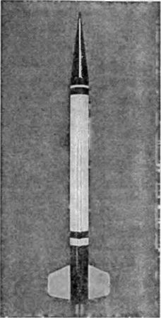
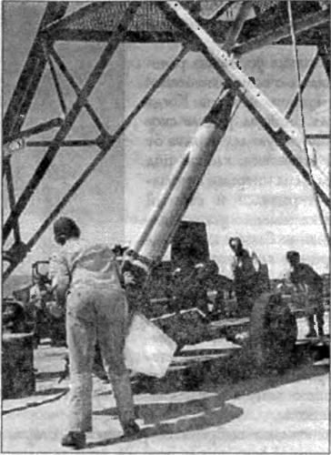

«WAC–Corporal»: полет в историю
Новая ракета Лаборатории реактивного движения, созданная по заказу Управления артиллерийско-технического снабжения и получившая название «ВАК-Корпорал» («WAC–Corporal»), была сконструирована как ракета с ЖРД, причем в качестве горючего использовалась экзотичная по тем временам смесь анилина с 20 %-ной добавкой фурфурилового спирта, а в качестве окислителя — азотная кислота.
Еще до окончания отработки ракеты «ВАК-Корпорал» понадобилось установить экспериментальным путем несколько основных характеристик ракеты. Для этого была создана модель (в одну пятую натуральной величины) ракеты, получившая название «Бэби-ВАК» («Baby-WAC»). Опытные запуски модели производились на полигоне Голдстоун с 3 по 5 июля 1945 года. Они подтвердили правильность выбора трех стабилизаторов вместо обычных четырех и обоснованность конструкции стартового ускорителя на твердом топливе.
В окончательном виде ракета «ВАК-Корпорал» представляла собой трубу с длинной конической носовой частью и тремя стабилизаторами; общая длина ракеты составляла 4,93 метра, а диаметр — 31 сантиметр. Стартовый вес ракеты без ускорителя — 302 килограмма, полезная нагрузка — 11 килограммов. Двигатель ракеты создавал на протяжении 45 секунд работы тягу порядка 680 килограммов.
Система подачи компонентов топлива в камеру сгорания было вытеснительным, давление создавалось сжатым воздухом, а не азотом, как это делалось раньше. Такая замена позволила значительно упростить эксплуатацию ракеты в полевых условиях.
Двигательная установка ракеты включалась с помощью особого инерционного клапана Когда ускоритель сообщал ракете скорость, достаточную для отрыва от пусковой установки, клапан под действием силы инерции автоматически открывался и сжатый воздух одновременно устремлялся в топливные баки и к приводному поршню главного топливного клапана.
Вместе с метеорологическими приборами в носовой части ракеты «ВАК-Корпорал» размещались парашют и автоматические устройства для сбрасывания носового конуса и раскрытия парашюта.
Первоначально выбранный ускоритель старта оказался недостаточно эффективным, поэтому он был заменен одним из вариантов морской ракеты, известной под названием «Тайни Тим», для чего была увеличена тяга ее двигателя, а также подвергнуты изменению стабилизаторы и головная часть. В первом варианте ракета «Тайни Тим» имела двигатель, обеспечивавший тягу примерно в 13500 килограммов в течение 1 секунды, но после изменения конструкции двигатель ее стал развивать тягу до 22700 килограммов за время немногим больше полсекунды.
Однако расчеты показывали, что за это время ускоритель и ракета поднимутся на высоту 65 метров. Разумеется, построить такую пусковую вышку не представлялось возможным. Поэтому было решено сохранить прежнюю высоту вышки — 30 метров. Следовательно, разгон ракеты должен был продолжаться и на начальном участке траектории, вне пределов пусковой вышки.


Опыт отработки ракеты «Прайвит-А» дал много ценного в вопросе связи ракеты и ускорителя во время разгона и автоматического их разъединения после окончания работы последнего. Эксперименты с ракетой «Бэби-ВАК» показали надежность конструкции разъединяющего устройства и подтвердили правильность сохранения невысокой вышки.
Новая стальная пусковая вышка представляла собой прямоугольную башню высотой 30 метров с тремя направляющими рельсами, установленными в вершинах равностороннего треугольника. Длина рабочей части рельсов несколько превышала 24 метра. К пусковой башне были подведены трубы, через которые осуществлялась заправка ракеты топливом и сжатым воздухом.
Новые ракеты требовали и нового полигона. И такой полигон был создан в одном из районов штата Нью-Мексико, известном под названием Уайт Сандс (White Sands — Белые Пески). Этот район был облюбован специалистами в области ракет по тем же соображениям, которыми руководствовались ученые Манхэттенского проекта, выбравшие это место для взрыва первой урановой бомбы: большие открытые участки местности с плохими почвами и малочисленным населением создавали благоприятные условия для проведения здесь любых крупномасштабных испытаний.
Полигон представлял собой плоскую сухую песчаную долину, лежащую между двумя горными хребтами, местами поросшими шалфеем и сорными травами. Долина расположена на высоте около 1200 метров над уровнем моря; наиболее же высокие вершины горных хребтов возвышаются над долиной еще на 2000 метров. Климатические условия в долине вполне благоприятны, небо почти всегда безоблачно. Короче говоря, испытательный полигон в Уайт Сандс, основанный распоряжением военного министра от 20 февраля 1945 года, можно назвать идеальным, если не считать, что его размеры сравнительно невелики. Длина его с юга, от границы между штатами Техас и Нью-Мексико, на север составляет около 280 километров, а ширина с запада на восток — в среднем 65 километров.
После постройки первоочередных объектов — колодцев, казарм, мастерских, сборочных залов, линий связи — в центре полигона была сразу же сооружена бетонная стартовая площадка На расстоянии 100 метров от нее инженеры-фортификаторы выстроили самое прочное в мире здание — «блокгауз», которое стало своего рода нервным центром всего полигона, где сходились десятки линий связи. Толщина стен «блокгауза», имевших в плане почти прямоугольную форму, была свыше 3 метров. Прочная железобетонная крыша в виде пирамиды имела толщину до 8,2 метра. Внутри «блокгауз» освещался мощными лампами дневного света. Визуальное наблюдение за ракетами велось с помощью перископов.
Именно на этом полигоне состоялись летные испытания ракеты «ВАК-Корпорал» — первой американской ракеты, «нацеленной» в космос. Они были проведены в период с 26 сентября по 25 октября 1945 года. По данным радиолокатора ракета достигла в вертикальном полете высоты 70 километров. Значительное превышение высоты по сравнению с расчетной объяснялось главным образом снижением веса за счет изменений и улучшений конструкции ракеты, введенных в ходе ее отработки, а также увеличением начального импульса в связи с использованием ускорителя старта на основе ракеты «Тайни Тим».
«Космическое» наследие Третьего рейха. Разработка и успешные запуски ракет «ВАК-Корпорал» свидетельствуют о том, что и в Америке нашлись здравомыслящие люди, оценившие те перспективы, которые дает ракетная техника, И хотя это было вызвано, скорее, военной необходимостью, чем осознанным желанием сделать первый шаг в космическое пространство, сам по себе факт создания работоспособной метеорологической ракеты с возвращаемым приборным отсеком говорит о многом.
Но несомненный успех конструкторов из Лаборатории реактивного движения поблек на фоне сообщений, поступавших из Европы. Когда американские войска добрались до материалов ракетного центра Третьего рейха, как никогда стало очевидным колоссальное отставание Америки в области военного ракетостроения. Теперь главную свою задачу американские военные видели не в создании собственных ракет, а в воспроизведении на американской территории того, что успели сделать немецкие конструкторы. По этой причине многие проекты оказались отложены на потом, а все силы брошены на освоение чужого опыта.
Операция «Пейпер-клипс», направленная на «отлов» немецких ракетчиков, увенчалась полным успехом. Из Европы в США было вывезено 492 немецких специалиста по ракетостроению и 644 члена их семей. Эту группу возглавляли Вальтер Дорнбергер и Вернер фон Браун.
А в конце июля 1945 года на испытательный полигон в Уайт Сандс было доставлено 300 вагонов с агрегатами и деталями ракет «Фау-2». К тому времени уже был построен стенд для испытания полностью собранных ракет. Он расположился на обрыве холма и представлял собой прочную бетонную шахту с отверстием в нижней части для выпуска струи газов в горизонтальном направлении. Сама ракета помещалась сверху и удерживалась на месте с помощью прочной стальной конструкции, снабженной устройством для измерения силы тяги ракетного двигателя.
Программа испытаний предусматривала систематический запуск ракет «Фау-2» в среднем по две штуки в месяц. Контроль над запусками осуществляло Управление артиллерийско-технического снабжения, а ответственность за создание и подготовку ракет несла фирма «Дженерал Электрик» («General Electric»), что являлось частью ее обязанностей по крупному производственному контракту, условно названному «Проектом Гермес» («Project Hermes»). Различные научно-исследовательские институты, правительственные агентства и даже учебные институты имели задачу обеспечивать создаваемый ракетный центр бортовыми приборами и аппаратурой управления.
К тому времени, когда начались работы в Уайт Сандс, англичане успели запустить две ракеты «Фау-2». Однако запуск этих ракет, осуществленный из района Куксхафена немецкими специалистами под наблюдением англичан, был простым повторением того, что делалось в военное время; к тому же один из стартов оказался неудачным.
Американцы подошли к процессу более творчески. Им ничего другого не оставалось. Дело в том, что инженеры, которым была поручена сборка ракет, сразу же столкнулись с довольно сложной проблемой, заключавшейся в том, что американские войска захватили в качестве трофеев не целиком собранные и готовые к пуску ракеты, а главным образом отдельные детали и агрегаты. Они просто «очистили» немецкие заводы и упаковали все, что могли найти. Примерно 50 боеголовок были в хорошем состоянии, но для научных целей они оказались почти бесполезными из-за чрезмерной тяжести и отсутствия люков для установки приборов. По специальному заказу завод морских орудий изготовил новые боевые головки, в которых можно было размещать аппаратуру, а до этого ученым пришлось довольствоваться немецкими образцами. Имелось также 115 приборных отсеков, из которых больше половины оказалось в совершенно непригодном состоянии и требовало серьезного ремонта. Кроме того, было вывезено 127 комплектов вполне исправных топливных отсеков, около 100 рам двигателя, большая часть которых находилась в хорошем состоянии, и 90 комплектов хвостовой части. Далее американские инженеры и ученые получили около 180 трофейных кислородных баков и такое же количество баков для спирта, примерно 200 турбонасосных агрегатов и 215 наполовину исправных ракетных двигателей.
Каждая ракета собиралась из только что испытанных деталей непосредственно накануне пуска, так как немцы предупредили своих американских коллег, что надежность работы ракет резко ухудшалась, если полностью собранные ракеты хранились на складе в течение более или менее продолжительного времени. В дальнейшем на полигоне стало правилом не запускать ракету, собранную более чем за 72 часа до старта.
Первое огневое испытание ракеты «Фау-2» на полигоне в Уайт Сандс было проведено 15 марта 1946 года. Ракета грохотала на стенде в течение более одной минуты, и все кончилось благополучно. Первый пуск был назначен на 16 апреля. Хотя все детали и части испытывались непосредственно перед сборкой, они все-таки не были новыми, поэтому организаторы запуска предприняли дополнительные меры предосторожности. Инженеры сконструировали специальное устройство аварийной отсечки топлива, которое по радиокоманде с наземной станции управления прекращало доступ топлива в двигатель. Случилось так, что это устройство пригодилось при первом же опытном пуске. Спустя всего 19 секунд после взлета ракета внезапно развернулась на 90° и устремилась на восток. Прежде чем устройство аварийной отсечки топлива вступило в действие, наблюдатели заметили, что стабилизатор № 4 разрушился. Расследование показало, что соответствующий этому стабилизатору графитовый газовый руль раскрошился вскоре после взлета и триммер, приняв на себя всю нагрузку, ослабил свой стабилизатор. Для того чтобы предотвратить подобные аварии, все графитовые газовые рули впоследствии просвечивались рентгеновскими лучами, а затем покрывались слоем картона, который быстро сгорал после пуска маршевого двигателя.
10 мая 1946 года для представителей прессы и всех, кому случилось оказаться в тот день на полигоне, был проведен показательный пуск ракеты «Фау-2» под № 3. Демонстрация закончилась успешно, а вслед за этим состоялись летные испытания ракет № 4, 5 и 6. Ракета под № 7 отклонилась от заданной траектории, однако это было замечено только теми, кто обслуживал следящее устройство. Ракета № 8 повела себя явно ненормально и взорвалась через 27 секунд после старта на высоте 5,5 километра. Причиной взрыва явилась авария турбонасосного агрегата, один из подшипников которого, работающий на перекачке жидкого кислорода, был густо смазан маслом. Загорание этого масла и привело к взрыву ракеты.
Ракета № 9, запущенная 30 июля, работала безотказно, достигнув рекордной высоты в 167 километров. При испытании ракеты № 10 снова пришлось прибегнуть к устройству аварийной отсечки топлива; через 13,5 секунды после взлета эта ракета повела себя весьма странно: по-видимому, что-то случилось с системой управления ракеты, заставившей сервопривод одного из газовых рулей отклонить его в крайнее положение.
Неожиданными отклонениями от заданной траектории были отмечены и испытания ракет № 11 и 14. Первая развернулась на восток спустя 4 секунды после старта и пошла над землей на высоте около 100 метров по траектории с незначительным восхождением. Вторая взлетела нормально, но через 5 секунд на мгновение «клюнула» носом; после этого ракета выровнялась и в течение следующих 2–3 секунд продолжала набирать высоту, затем «клевок» повторился более отчетливо. Ракета в это время, по-видимому, находилась на высоте около 180 метров. Прежде чем кто-либо успел сообразить, что произошло с ракетой, она развернулась носовой частью на юг и, приобретя хорошую устойчивость, с ревом прошла над головами экспериментаторов в сторону расположения военного гарнизона, на Эль-Пасо. Оператор, управлявший ракетой, точно приземлил ее за пределами военного городка.
Интересным опытным запуском, не входившим в программу исследований верхних слоев атмосферы, но являвшимся частью «Проекта Гермес», был пуск ракеты «Фау-2» с палубы авианосца «Мидуэй». Он состоялся вблизи Бермудских островов 6 сентября 1947 года. Целью этих испытаний, названных «Операцией Сэнди», было проверить, возможно ли снаряд такого размера заправлять топливом и запускать с палубы военного корабля, может ли корабль-ракетоносец продолжать движение во время пуска ракеты и будет ли он способен выполнять свои обычные функции сразу после запуска ракеты, а если нет, то сколько времени понадобится на то, чтобы восстановить нормальные функции корабля. Испытания дали положительный ответ на все три вопроса, однако сама ракета «Фау-2» потерпела аварию. Она взлетела под острым углом и взорвалась, покрыв расстояние всего лишь около 10 километров.
Еще один комплекс испытаний, явившийся новой фазой работы над «Проектом Гермес», был известен под названием «Операция Пушовер». Эта операция заключалась в том, чтобы специально взорвать полностью заправленную ракету «Фау-2», поднятую в воздух с военного корабля.
Анализируя общую сводку летных испытаний американских ракет «Фау-2», можно подумать, что она отражает процесс медленного «старения» оборудования. В первых семи запусках ракетам не удалось подняться выше 150 километров, что, вероятно, объясняется недостатком практического опыта у экспериментаторов. Однако по мере того, как персонал приобретал больший опыт в подгонке деталей, были достигнуты более значительные результаты. Ракета № 9 поднялась на высоту 167 километров, а затем, после двух неудачных попыток, ракета № 12 набрала высоту 164 километра. Две следующие ракеты показали не очень хорошие результаты, а ракета № 14 вообще отказала, но зато ракеты № 16 и 17 взлетали на высоту соответственно 167 и 177 километров. После этого высота вновь пошла на снижение. Так, если ракета № 21 набрала высоту в 160 километров, то все последующие уже не превышали ее.
На самом же деле причиной постепенного снижения максимальной высоты подъема ракет является не «старение» оборудования, а постоянная работа по модификации ракет, обусловленная определенными целями и задачами, которые экспериментаторы ставили перед собой на различных этапах испытаний. У 24 ракет была существенно изменена форма, и это, по-видимому, отразилось на высоте их подъема. Более того, все время увеличивался стартовый вес ракет. Если сухой вес стандартной американской ракеты «Фау-2», включая боевую головку весом 1048 килограммов, вначале составлял 4056 килограммов, то уже в 1946 году ракеты имели избыточный вес 72 килограмма, а в 1947 году они были на целых 180 килограммов тяжелее стандартных ракет. В 1948 году вес ракеты был увеличен еще на 239 килограммов, а в 1949 году он вырос до 4460 килограммов.
То, что «старение» оборудования оказывало лишь незначительное влияние, было доказано пуском ракеты, не входившим в программу испытаний. Эта ракета была запущена с единственной целью — определить, какой высоты она может достичь. Оказалось, что предельным практическим потолком для американского варианта ракеты «Фау-2» является высота в 206 километров.
Благодаря приборам, устанавливаемым на ракетах «Фау-2», удалось получить достаточно обширный массив метеорологических данных. Помимо измерения температуры и давления воздуха с ракеты производилось фотографирование поверхности Земли с больших высот и солнечного спектра, что имело по тем временам большую научную ценность. И, наконец, с помощью ракет «Фау-2» была измерена интенсивность космических лучей на больших высотах и взяты пробы воздуха до высоты 72 километров.